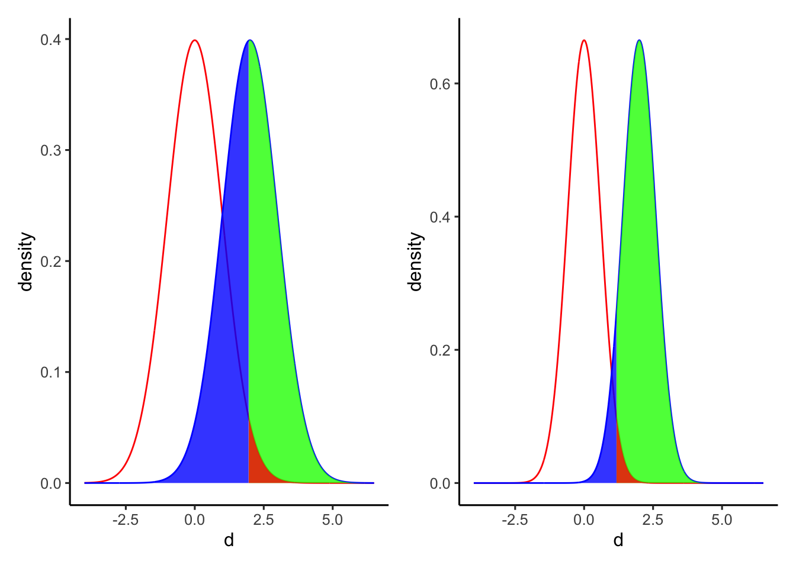

Chapter 8 統計的仮説検定
統計的仮説検定の考え方について理解する。
- 二項検定
- t検定
- 帰無仮説と対立仮説
- p値
8.2 統計的仮説検定の考え方
8.2.1 二項検定
まずは、あるカテゴリーの割合が特定の値と等しいかあるいは異なるかを検定する二項検定（binomial test）を例として、統計的仮説検定の基礎となる「帰無仮説」、「対立仮説」及び「p値」の意味について理解していく。
ここでは、コインの表と裏が出る確率に偏りがないかを検討する実験を例として見ていく。コインを10回投げて表が出た回数\(x\)をカウントしていく。理論的には、表が\(x\)回出る確率\(P(x)\)は、コインを投げる回数\(n\)と表が出る確率\(q\)をパラメータとする二項分布に従う。
\[ P(x) = {}_n\mathrm{C}_xq^{x}(1-q)^{(n-x)}\\ x \sim Binomial(n, q) \]
コインにゆがみがない、すなわち表と裏が出る確率に偏りがないならば、10回投げて表が\(x\)回出る確率は、\(n=10\), \(q=0.5\)をパラメータとする二項分布に従うはずである。図にすると以下の通りである。
plot = data.frame(x=0:10, p=dbinom(x=0:10, size=10, prob=0.5))
ggplot2::ggplot() +
ggplot2::geom_bar(data=plot, aes(x=factor(x), y=p), stat="identity") +
labs(y = "P(x)", x ="x") +
theme_classic()
では、実際にコインを10回投げてみて表が出た回数を数えてみたところ、表が2回しか出なかったとする。この結果から、「このコインにはゆがみがあって、片一方の面だけが出やすい」と言ってもよいのか？
これを検討するために、表と裏それぞれが出る確率の等しいコインを投げる場合（すなわち、\(q=0.5\)の場合）との比較を行い、今回の実験結果がどれくらいまれな事象と言えるのかを比較する。
このとき、「コインの表が出る確率は0.5である」といった仮説のことを帰無仮説(null hypothesis)といい、「コインの表が出る確率は0.5ではない」といった帰無仮説に対する仮説のことを対立仮説（alternative hypothesis）と呼ぶ。帰無仮説は\(H_{0}\)、対立仮説は\(H_{1}\)と表すこともある。つまり、この例での帰無仮説は「\(H_{0}:q=0.5\)」、対立仮説は「\(H_{1}:q \neq 0.5\)」となる。
では、今回の帰無仮説となる二項分布（2つのパラメータが、\(n=10, q=0.5\)の場合)の分布を見てみよう。理論的には、表が\(x\)回出る確率\(P(x)\)は、\(x\)それぞれについて以下のようになる。
## x p_x
## 1 0 0.0009765625
## 2 1 0.0097656250
## 3 2 0.0439453125
## 4 3 0.1171875000
## 5 4 0.2050781250
## 6 5 0.2460937500
## 7 6 0.2050781250
## 8 7 0.1171875000
## 9 8 0.0439453125
## 10 9 0.0097656250
## 11 10 0.0009765625表もしくは裏が出る回数が2回以下の場合の確率を計算すると、
## [1] 0.109375となる。つまり、もしゆがみのないコインならば、片一方の面だけが出る回数が2回以下の確率はおおよそ0.11ということになる。
この例で求めた確率0.11のように、「帰無仮説の前提のもとで、特定の結果よりもまれな結果が得られる確率」をp値と呼ぶ。
p = 0.11 は小さい確率のように思える。なので、「ゆがみのないコインならば、一方の面が2回出る確率は本来0.11である。本来だったらあまり起こり得ない実験結果が得られたので、このコインはゆがみのないコインである（\(H_{0}: q = 0.5\)）とは考えにくい。ゆえに、このコインにはゆがみがないという帰無仮説（\(H_{0}: q = 0.5\)）を棄て、ゆがみがあって片一方の面が出やすいコインであるとする対立仮説（\(H_{1}: q \neq 0.5\)）を採択する」という結論は妥当なようにも思える。
しかし、人によって0.11を小さいと評価しても良いのか、基準が分かれる。そこで、研究者の間でどこまでの数値を小さいと評価するかの基準が決まっている。この基準となる確率が、有意水準 (significance level)である。
一般的に有意水準には0.05（5%）に設定されることが多い。なぜ5％を判断基準とするのかについては、特に明確な理由はない（みんなから合意されているからという以上の理由はない）。
つまり、「帰無仮説（ゆがみのないコインを投げる）の前提のもとでは、表が出る回数が2回以下の確率は0.11 であった。これは小さい確率のように思えるが、判断基準の5％よりかは大きい。すなわち、このコインはゆがみがない（\(H_{0}:q = 0.5\)）という仮説を棄てるわけにはいかない」ことになる。
この例のように「コインが表か裏かに関わらず、一方の面だけが出やすい」という対立仮説を検討する場合の検定は、両側検定という。仮に、今回の仮説で表と裏を区別するとして「表が出にくい」つまり「表が出る回数が2回以下の確率」を対象とする場合、このような検定を片側検定という。二項分布は左右対称の分布なので、両側p値は片側p値の2倍の値である(厳密には左右対称ではないのであくまで近似値)。多くの場合、両側検定を使うのが一般的である。
Rには、二項検定を行うための関数binom.test()が用意されている。binom.test()に二項分布のパラメータ（\(n\)と\(q\)にあたる数値）と実験結果を入れると、p値を求めてくれる。上の例について、binom.test()でp値を求めてみよう。
##
## Exact binomial test
##
## data: 2 and 10
## number of successes = 2, number of trials = 10, p-value = 0.1094
## alternative hypothesis: true probability of success is not equal to 0.5
## 95 percent confidence interval:
## 0.02521073 0.55609546
## sample estimates:
## probability of success
## 0.28.2.2 二標本の検定
先ほどの例では「\(H_{0}:q=0.5\)」という帰無仮説を設定し、ある値が特定の値と等しいか異なるかを検定した。統計的仮説検定は、「2つの母集団の間である値に差があるかどうか」を検定するのに使われることも多い。 代表的な例としては、「2つの母集団の平均値の間に差があるか」を検討する二標本のt検定がある。
t検定の考え方も、基本的に同じである。2つの集団の間で平均値に差がないとする帰無仮説の理論分布（t分布）と比べて、実際に得られた差の値がどれくらい珍しいのかを検討する。
例えば、母集団Aと母集団Bの平均値をそれぞれ\(\mu_{A}\)、\(\mu_{B}\)とする。帰無仮説は「\(H_{0}:\mu_{A} - \mu_{B} = 0\)」、対立仮説は「\(H_{1}: \mu_{A} - \mu_{B} \neq 0\)」である。
2つの集団の標本平均の差が帰無仮説のもとの理論分布（t分布）と比べて珍しいかを検討する。
以下のサンプルデータを使って、平均値の差の検定をしてみよう。まず、以下のプログラムを実行する。
set.seed(1)
Value = c(rnorm(n = 10, mean = 0, sd = 1), rnorm(n = 10, mean = 1, sd = 1))
Group = c(rep("A", 10), rep("B", 10))
sample_data = data.frame(Group = Group, Value = Value)
head(sample_data)## Group Value
## 1 A -0.6264538
## 2 A 0.1836433
## 3 A -0.8356286
## 4 A 1.5952808
## 5 A 0.3295078
## 6 A -0.8204684AとBの２つの集団(Group)から、ある値（Value）を測定したとする。
まず、2つの条件別にValueの平均値や標準偏差を求める。
## A B
## 0.1322028 1.2488450## A B
## 0.780586 1.069515集団Bの方が集団Aよりも平均値が大きいよう見えるが、そう結論づけて良いのか。これをt検定で検討しよう。
まず、2つの集団間の平均値の差を元に、以下の式から「t値」を求める。
\[ t = \frac{\bar{x_{A}} - \bar{x_{B}}}{\sqrt{s^2_{A}/n_{A}+s^2_{B}/n_{B}))}} \]
\(\bar{x_{A}}\)と\(\bar{x_{B}}\)はそれぞれ集団Aと集団Bの平均値、\(s^2_{A}\)と\(s^2_{B}\)はそれぞれ集団AとBの分散、\(n_{A}\)と\(n_{B}\)はそれぞれ集団AとBのサンプルサイズ（標本数）である。
AとBが同じ正規分布\(Normal(\mu, \sigma^2)\)から抽出される場合、t値は自由度\(n_{A}+n_{B}-2\)のt分布に従う。
t分布は、自由度によって分布が変化する（サンプルサイズの大小に応じて理論分布を調整することができる）。
x = seq(-3, 3, 0.05)
y_t2 = dt(x = x, df = 2) #自由度2のt分布
y_t5 = dt(x = x, df = 5) #自由度5のt分布
y_t20 = dt(x = x, df = 20) #自由度20のt分布
dat_t2 = data.frame(df = 2,x = x, y = y_t2)
dat_t5 = data.frame(df = 5,x = x, y = y_t5)
dat_t20 = data.frame(df = 20,x = x, y = y_t20)
dat_t = rbind(dat_t2, dat_t5, dat_t20)
p = ggplot2::ggplot() +
ggplot2::geom_line(data = dat_t, aes(x = x, y = y, color = factor(df))) +
ggplot2::labs(x = "t", y = "value", color = "Degree of freedom") +
ggplot2::theme_classic()
p
標本から得た差のt値が理論分布のどこに位置するかを検討する。
Rに入っているt.test()関数を使うことで、２つの集団の間の平均値の差の検定を行える。
##
## Welch Two Sample t-test
##
## data: Value by Group
## t = -2.6669, df = 16.469, p-value = 0.01658
## alternative hypothesis: true difference in means between group A and group B is not equal to 0
## 95 percent confidence interval:
## -2.0022169 -0.2310675
## sample estimates:
## mean in group A mean in group B
## 0.1322028 1.2488450p値は0.02であった。これは5%よりも小さいので、今回の結果が生じる確率はまれであり、AとBの母集団の平均値の間に差はないとする帰無仮説（\(H_{0}:\mu_{A}-\mu_{B}=0\)）を棄却し、AとBの母集団の平均値は異なる（\(H_{1}:\mu_{A}-\mu_{B}\neq0\)）という対立仮説を採用することとなる。対立仮説が採択されたことで母集団AとBの平均値の間には大きな差があることが示され、このような結果は「有意差(statistically significant difference)がある」と表現されることが多い。
t検定には、2つの標本の母集団の分散が等しいと仮定するかしないかで二種類の検定がある。母集団の分散が等しいと仮定しない場合の検定はウェルチの検定(Welch’s t-test)と呼ばれ、Rのt.test()関数でデフォルトで出る検定結果はこのウェルチの検定による結果である。一般的に2つの標本の母分散は不明であるので、それらが等しいかどうかも不明である。なので、等分散を仮定しないt検定をしておくほうが保守的である。
8.3 統計的仮説検定のまとめ
まとめると、
「差がない（あるいは偏りがない）」とする帰無仮説と「差がある（あるいは偏りがある）」とする対立仮説を立てる。
帰無仮説を前提とする理論分布のもとで、今回の結果よりも珍しい結果が生じる確率（p値）を求め、
その確率（p値）が有意水準よりも小さいかを評価し、
p値が有意水準よりも小さい場合は、帰無仮説を棄却して対立仮説を採択し、
p値が有意水準以上の場合は、帰無仮説を棄却しない
というのが、統計的仮説検定のプロセスである。
p値が有意水準以上の場合、「帰無仮説を支持する、帰無仮説が正しいと結論づける」のではなく、「帰無仮説を棄却しない」という表現であることに注意。
統計的仮説検定では、背理法と同様の考え方が取られている。
帰無仮説が棄却されるか（帰無仮説が正しくなく、対立仮説が正しいか）を検討したい。
「帰無仮説が正しい」という前提のもとで今回の結果が得られるかを検討する。
「帰無仮説が正しい」という前提では矛盾が生じる（帰無仮説の前提のもとでは今回の結果はほとんど生じ得ない）。
「帰無仮説は正しい」を棄却し、「対立仮説が正しい」という結論を導く。
しかし、3)の段階で矛盾が生じなかったとしても、「帰無仮説が正しい」ことを積極的に示すことにはならない。統計的仮説検定では「帰無仮説が棄却できるか」を検討しているのであって、棄却されないからといって帰無仮説を正しいという結論を導くことはできない。p値が有意水準以上だった場合には、「帰無仮説が正しいか誤っているかの結論は今回の検定の結果からは出せないので、判断を保留する」という結論になる。
また、次の章の第1種の過誤の説明にもあるように、p値が有意水準未満であっても、必ずしも「対立仮説が正しい」とも限らない。
8.4 確認問題
以下のプログラムを読み込む。
ある教授法に児童の学力向上の効果があるかを検討した。学校Bにはその教授法を実施し、学校Aには何もしなかった。その後、学校Aと学校Bそれぞれ10人の生徒に学力テストを行った。A、Bそれぞれが学校A、Bそれぞれの生徒の成績である（架空のデータである）。
A = c(38, 53, 61, 27, 54, 55, 44, 45, 44, 41)
B = c(48, 40, 43, 56, 69, 53, 47, 41, 42, 91)
Value = c(A, B)
Treatment = c(rep("A", 10), rep("B", 10))
sample = data.frame(Treatment = Treatment, Value = Value)
str(sample)## 'data.frame': 20 obs. of 2 variables:
## $ Treatment: chr "A" "A" "A" "A" ...
## $ Value : num 38 53 61 27 54 55 44 45 44 41 ...学校Aと学校Bそれぞれについて、テストの得点の平均値及び標準偏差を求めて報告せよ。
この教授法に成績向上があったかどうかについてt検定（等分散を仮定しない）で検討し、結果について報告するとともに結論を述べよ。
※t.test()関数を使う。等分散を仮定しない検定の場合は、特にオプションをしていしないでもよい。